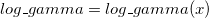

/math-2a31703dd90bf1938d4fbe3e3c317d2e.png "\ln \Gamma (x)") .x > 0. It is based on Chebyshev expansions.
.x > 0. It is based on Chebyshev expansions. evaluates .x > 0. It is based on Chebyshev expansions.
If x is too large there is a danger of setting overflow so the function evaluation must fail.
For more information please review the s14abc function in the NAG document.
/math-dc16e8d280f4aca44dcd9a880e754476.png "\ln\Gamma (x)") , x > 0
, x > 0